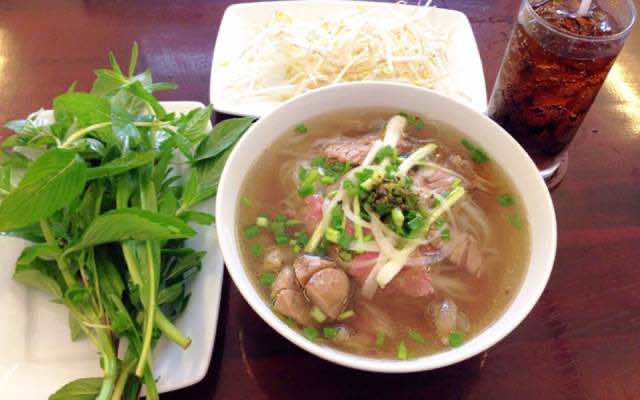

Ho Chi Minh City: A Place of Heartfelt Memories
Why Ho Chi Minh City Is Special to Me
Ho Chi Minh City, Vietnam, is more than just a place on the map for me. It holds a special place in my heart, a sanctuary where I grew up creating fond memories with my family. Each weekend spent in this vibrant city was a celebration of togetherness, culture, and the simple joys of life. From the bustling streets to the calming moments shared with loved ones, Ho Chi Minh City is where my heart feels most at home.
Special Memories of Ho Chi Minh City
My fondest memories of Ho Chi Minh City come from the countless weekends spent with my family. Whether it was visiting my grandparents or exploring the city's iconic landmarks, every moment was filled with joy and gratitude. The warmth of the people, the endless opportunities to bond, and the city’s unique charm make it a place that stays in my heart forever.

The Vibrant Food Scene
Ho Chi Minh City’s food scene is a huge part of what makes it so special. The city offers an explosion of flavors—from the steaming bowls of pho enjoyed on rainy afternoons to the crispy, savory banh mi found at every corner. The food here is not just sustenance; it’s an experience, a reflection of the city’s diverse culture and history. Sharing these meals with my family made each visit memorable and even more meaningful.

Quality Time with Loved Ones
My family played a central role in making my visits to Ho Chi Minh City so unforgettable. From quiet evenings at my grandparents' house to lively trips around the city, these experiences shaped my deep connection to the place. Spending time together in a city filled with history and culture created lasting memories that will forever be cherished.